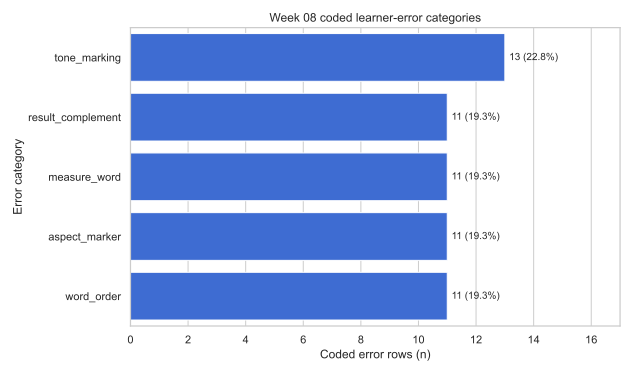
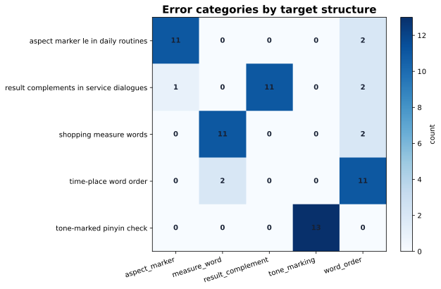

Tuần 08
Phân tích lỗi người học
Từ learner response đến frequency table, crosstab và Results paragraph.
80response rows
76usable rows
66coded error rows
Bridge
Week 07 đặt tên difficulty; Week 08 đếm coded examples
Không chuyển sang NLP. Ta chỉ học cách biến ví dụ lỗi thành evidence có thể viết trong Results.
Rubrictask evidence
Difficultyteacher code
Error rowlearner answer
Resultscount + example
Unit
Mỗi dòng là một response, không phải một learner
response_idlearneritemuse
R001L001I01một câu trả lời cho một prompt
R002L001I02cùng learner, item khác
Codebook
Error code phải giúp dạy lại
word_orderplace/time sai vị trí
measure_wordclassifier như 个, 杯, 本
aspect_markermissing/misplaced le
tone_markingpinyin tone marks
Filter
Đừng count mọi dòng như lỗi
usable = df[df["usable_error"] == True]
error_rows = usable[usable["has_error"] == True]80raw rows
76usable rows
66coded errors
Frequency
value_counts trả lời: lỗi nào nhiều nhất?
errorn%feature
word_order1725.8place phrase after verb
measure_word1319.7generic 个
tone_marking1319.7missing/wrong tone
Crosstab
crosstab trả lời: lỗi nằm ở target nào?
pd.crosstab(
error_rows["target_structure"],
error_rows["error_category"]
)Nếu một lỗi xuất hiện ở nhiều target, teaching priority có thể là pattern chung chứ không chỉ một item.
Priority
Priority = frequency x mean severity
17word_order count
1.88mean severity
31.96priority score
Examples
Results cần ví dụ đại diện
Learner我学习在学校汉语。
Expected我在学校学习汉语。
Ví dụ làm error category đọc được trong paper.
Figure
Frequency figure cho top errors

Heatmap
Heatmap cho target by error

Writing
Results = count + pattern + implication + limitation
Trong 76 usable response rows, 66 dòng có coded learner error. Lỗi nhiều nhất là word_order.
Caution
Transfer là hypothesis, không phải proof
YếuVietnamese learners always put place phrase late.
Tốt hơnPossible Vietnamese transfer may be one hypothesis, but more evidence is needed.
Transfer
Cùng logic dùng cho các hướng khác
TCSOLlearner error priorities
Hán-Việtcontrastive hypotheses
MTPEtranslation error codes
Policycoding categories
Bài nộp
Submit một learner-error Results package
- 4 CSV tables
- 2 figures + captions
- representative examples
- Results paragraph 120-160 từ
- transfer-as-hypothesis note
Next
Week 09 hỏi: vì sao lỗi này có thể liên quan Hán-Việt?
Week 08 đếm lỗi. Week 09 sẽ dùng examples để xây contrastive analysis table.